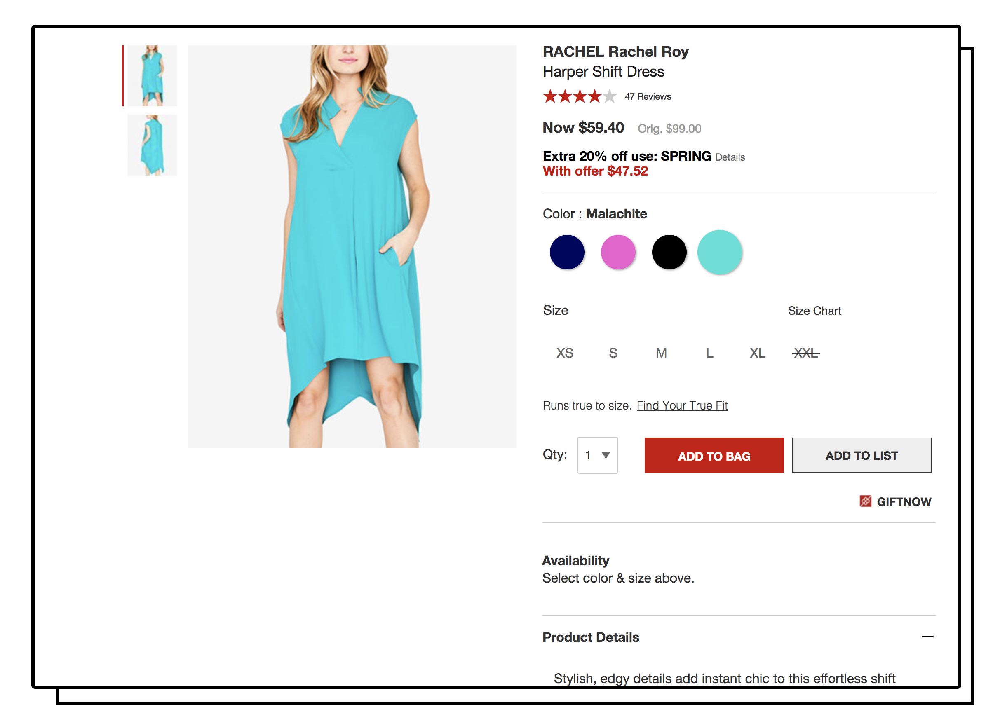

Tackling E-commerce's Biggest Challenge by Helping Users help Users

At Macy's.com one of the biggest challenges facing customers and the business was fit. How can we help customers understand how clothing will fit and flatter them before they make the purchase so that customers 1) feel confident enough to purchase and 2) feel good when the item come, ultimately helping our bottom line by 3) reducing OpEx costs associated with processing returns.
Our team set out and did research to validate that one of the main ways shoppers determined fit was through advice from other shoppers.
User Research
From customer research conducted via on-site interviews, we learned:
1) Size charts are only useful for customers who know their measurements well. Other customers use different signals such as reviews, images and manufacturer details.
2) Reviews are important to help customers decide:
If something is "true to size“
If there are other factors to consider when selecting size.
How the material performs (e.g. stretchable vs rigid, shrinks in wash)
3) Customers currently have difficulty visualizing product on themselves.
Models are often not representative of customers’ body type or size.

Approach & Challenges
If we extract info about fit and body type from users in the form of UGC then we reduce the size and fit ambiguity in making purchasing decisions resulting in increased conversion and decreased returns
Of course that came with its challenges such as--users aren't that altruistic and don't want to share a bunch of information just to help others make good choices, as well as how to present enough information that it wasn't overwhelming for customers.
I can't share too much of our product design process or ideas, but would love to chat more about it. Ultimately, we were able to create high fidelity prototypes (in a 1 week period!) and put it in front of users to garner really positive feedback.
User Feedback
One customer said “I love it, I would totally use it. I would probably shop here more if you guys have it." And another pointed out that our way of gathering information from customers (which we figured would be a drag) was easy to fill and asked the right amount of information
Although form is longer than current, the questions are easy to answer by tapping and selecting from choices.